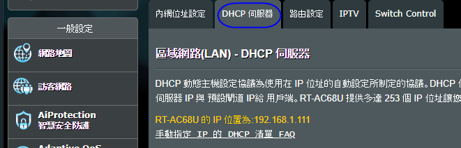

第一個分享器 (第1,2組) SSID:B505-01 PWD:b505b505 外網(b50501.ntue.edu.tw) 120.127.10.71 Mask: 255.255.255.0 Gateway: 120.127.10.1 DNS: 10.99.0.10, 10.99.0.11 內網 192.168.31.1(分享器) 以下共8位同學 每人一個 內網IP 及port 192.168.31.10 port:10000 192.168.31.11 port:10001 ...... 192.168.31.17 port:10007 第二個分享器 (第3,4組) SSID:B505-02 PWD:b505b505 外網(b50502.ntue.edu.tw) 120.127.10.72 Mask: 255.255.255.0 Gateway: 120.127.10.1 DNS: 10.99.0.10, 10.99.0.11 內網 192.168.32.1(分享器) 以下共8位同學 每人一個 內網IP 及port 192.168.32.10 port:10000 192.168.32.11 port:10001 ...... 192.168.32.17 port:10007 第三個分享器 (第5,6組) SSID:B505-03 PWD:b505b505 外網(b50503.ntue.edu.tw) 120.127.10.73 Mask: 255.255.255.0 Gateway: 120.127.10.1 DNS: 10.99.0.10, 10.99.0.11 內網 192.168.33.1(分享器) 以下共8位同學 每人一個 內網IP 及port 192.168.33.10 port:10000 192.168.33.11 port:10001 ...... 192.168.33.17 port:10007 第四個分享器 (第7,8組) SSID:B505-04 PWD:b505b505 外網(b50504.ntue.edu.tw) 120.127.10.74 Mask: 255.255.255.0 Gateway: 120.127.10.1 DNS: 10.99.0.10, 10.99.0.11 內網 192.168.34.1(分享器) 以下共8位同學 每人一個 內網IP 及port 192.168.34.10 port:10000 192.168.34.11 port:10001 ...... 192.168.34.17 port:10007 第5個分享器 (第9,10組) SSID:B505-05 PWD:b505b505 外網(b50505.ntue.edu.tw) 120.127.10.75 Mask: 255.255.255.0 Gateway: 120.127.10.1 DNS: 10.99.0.10, 10.99.0.11 內網 192.168.35.1(分享器) 以下共8位同學 每人一個 內網IP 及port 192.168.35.10 port:10000 192.168.35.11 port:10001 ...... 192.168.35.17 port:10007 第6個分享器 (第11,12組) SSID:B505-06 PWD:b505b505 外網(b50506.ntue.edu.tw) 120.127.10.76 Mask: 255.255.255.0 Gateway: 120.127.10.1 DNS: 10.99.0.10, 10.99.0.11 內網 192.168.36.1(分享器) 以下共8位同學 每人一個 內網IP 及port 192.168.36.10 port:10000 192.168.36.11 port:10001 ...... 192.168.36.17 port:10007 |
| How To Forward a Port |
| Get MAC Address |
| #include
<ESP8266WiFi.h> void setup(){ Serial.begin(115200); delay(500); Serial.println(); Serial.print("MAC: "); Serial.println(WiFi.macAddress()); } void loop(){} |
| 於Router中綁定各ESP8266之網內IP |
 |
| 小 米路由器設定 |
| 向學校申請固定IP 資料 b50501.ntue.edu.tw 120.127.10.71 b50502.ntue.edu.tw 120.127.10.72 b50503.ntue.edu.tw 120.127.10.73 b50504.ntue.edu.tw 120.127.10.74 b50505.ntue.edu.tw 120.127.10.75 b50506.ntue.edu.tw 120.127.10.76 Mask: 255.255.255.0 Gateway: 120.127.10.1 DNS: 10.99.0.10, 10.99.0.11 防火牆開啟 21,80,10000 ~ 10010 |